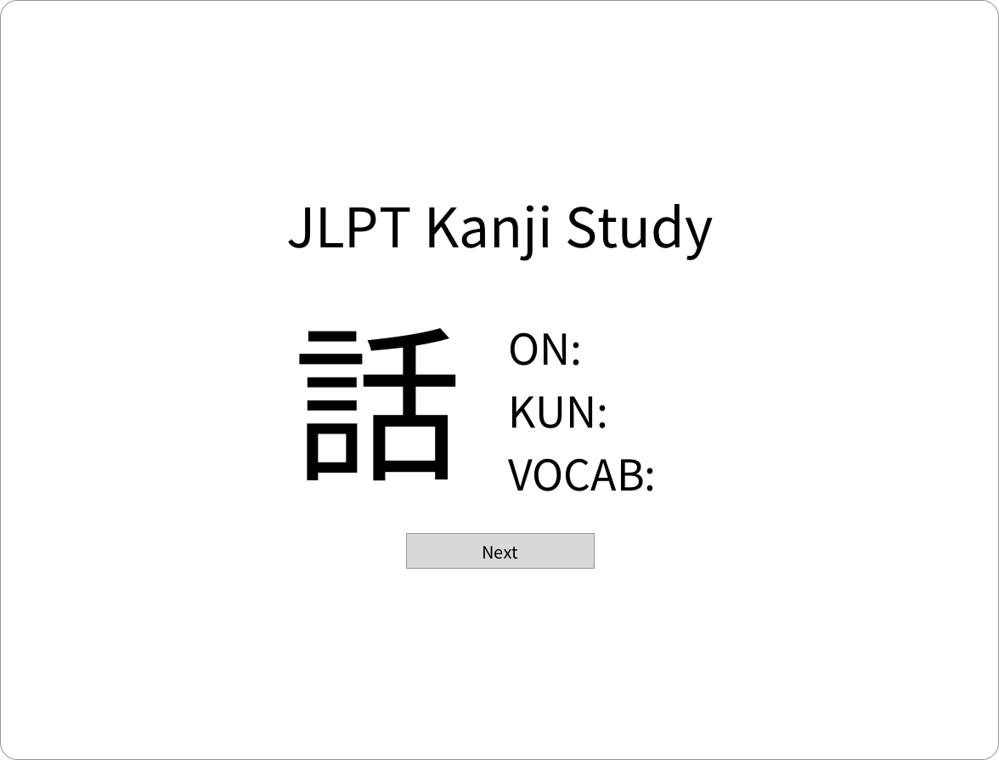
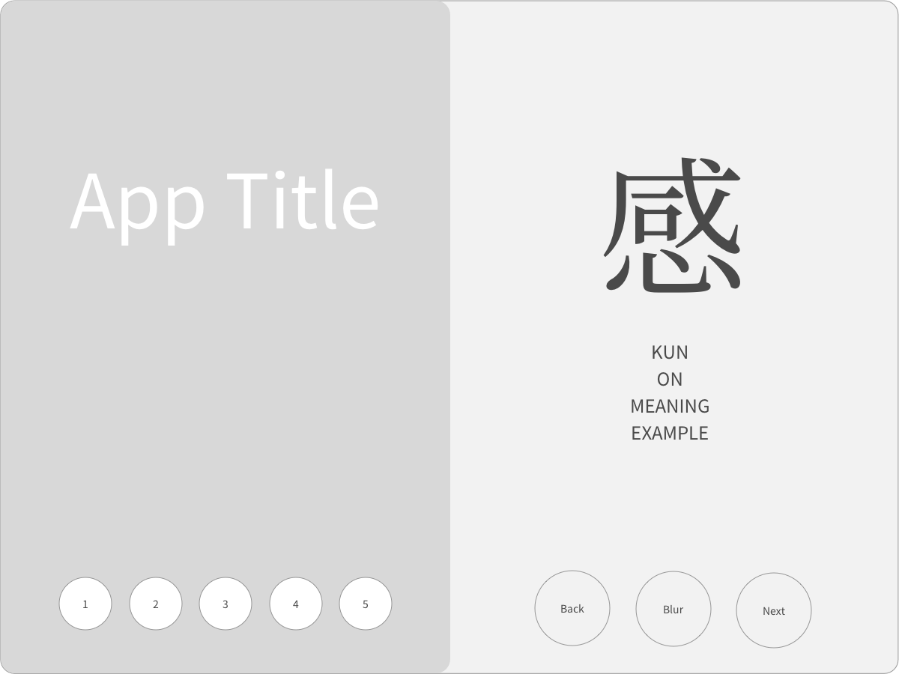
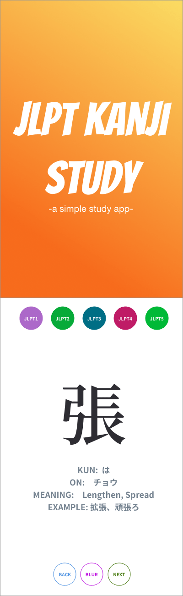
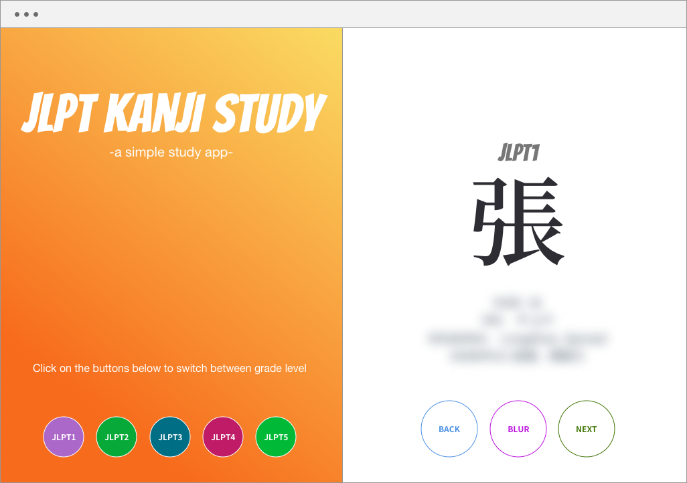
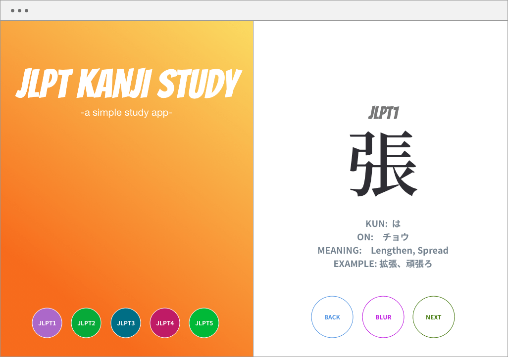

React
HTML
Vanilla CSS
JSON
Javascript
Github pages
Plan
I live in Japan and would love one day love to pass the highest level Japanese test, the JLPT1. One day, while poking around on youtube learning more about how to program using React, I stumbled upon a video that I thought was pretty clever. He talked about how programming in and of itself is not very important, but rather what you are able to do with program that instead should be the focus. So I thought that it would be a good motivation to try and program something that solved a particular problem for myself. At the moment it is trying to pass this particular test, for which I need to study and learn many Kanji. Since I also wanted a particular challenge to test out what I had been learning in React I thought the two would go well hand in hand with each other. Here is the original design I came up with for what I wanted to accomplish with my app. I wanted to loop over a big JSON file that I found which contained the kanji, its different pronunciations, and what test it is found in. I had never really gotten deep into JSON before so it was a great opportunity to learn more about what it is and how to manipulate the dats which it holds. After experimenting and hours and hours of researching the inner workings of React I was able to to pull out all of the data that I needed from the JSON file, split it up into its respective test category and then display one entry at a time.
Design
Once I was able to manipulate the data to my liking it became that I needed to have some buttons so the user could choose which test they wanted to study for. I also needed to add some buttons to go backwards while looping over my JSON because it is quite inconvenient if you can only go forward over the list. I also thought a bit more about the design which I wanted to achieve and how that would look on mobile as well as desktop devices.
Responsive
I think that this app looks really great on a mobile device and since my favorite app to study kanji was discontinued I have been longing for a way to quickly quiz myself while standing on the train or in line. This app which I created lets me study just as effectively on my desktop as my mobile. Since it is all React, there is no refreshing of the browser so it runs super fast on mobile devices.
Publish
The last change I made to date has been to add the blur button which blurs out the answer so the user can quiz themselves more effectively. I would like to take this app one step further in the future and allow for the user to log in and tailor the app a bit more to their own preferences. I would like them to be able to uncheck words they feel they don't need to study, and perhaps make allow them to make their own list of words that they want to study. This is the first real app that I have programmed that solves a particular problem and I am so excited to share it with friends to help their study efforts as well. Since it just loops over JSON data, it could be adapted very quickly to any study actually and I hope to make a few different study versions as well in the future.
  